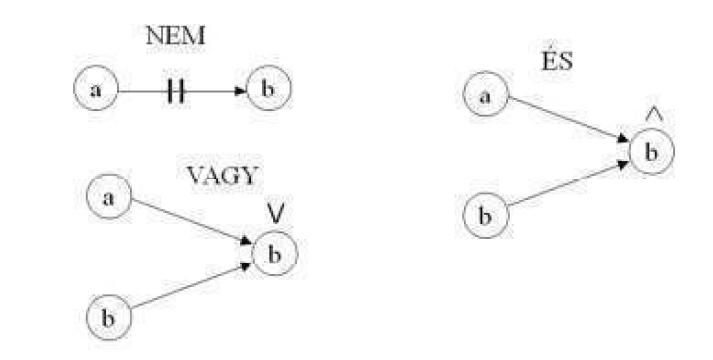
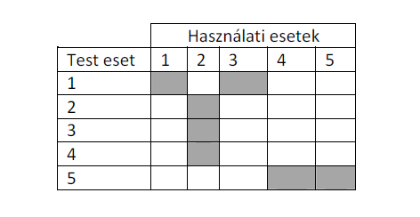

Ezek a technikák a tesztelés alapjaként a rendszer specifikációját, esetleg formális modelljét tekintik. Amennyiben a specifikáció jól definiált és megfelelően strukturált, ennek elemzése során könnyen azonosíthatjuk a tesztelés alanyait (test conditions), amelyekből pedig származtathatjuk a teszteseteket.
A specifikáció soha nem azt rögzíti, hogy hogyan kell a rendszernek megvalósítania az elvárt viselkedést (ennek meghatározása a tervezés feladata), csak magát a viselkedést definiálja. A specifikáció és a tervezés a fejlesztés folyamatában is külön fázist képviselnek, és gyakran a fejlesztő csoporton belül nem is ugyanazok a részvevők végzik. A specifikációs fázis legtöbbször megelőzi a tervezési fázist. Ez lehetővé teszi a munkafolyamatok párhuzamosítását: a specifikáció alapján a tesztmérnökök kidolgozhatják a teszteseteket miközben a rendszer tervezése és implementálása folyik. Ha az implementáció elkészül, a már kész tesztesetek futtatásával lehet ellenőrizni.
A tevékenységek ilyen párhuzamosítása a fejlesztés átfutási idejének rövidítésén túl a specifikáció ellenőrzésére is alkalmas. Ha ugyanis egy, a működő program ismerete nélkül, csak a specifikáció elemzése alapján megtervezetett teszteset hibát mutat ki, annak két oka lehet
a tervezés vagy az implementáció során a fejlesztők által elkövetett hiba,
ugyanazt a követelményt a teszt mérnök és a tervező másként értelmezte – ez a specifikáció hibája.
Nem minden fejlesztési projekt alapul pontosan definiált specifikáción. Ebben az esetben a specifikáció alapú tesztesetek megtervezése, illetve a tervezéshez szükséges információk megszerzése párhuzamosan, egymástól elkülönítve történhet, ami többlet erőforrások felhasználását, és a félreértések esélyének növekedését jelenti.
Van azonban olyan eset is, amikor a formális specifikáció hiánya nem jelenti a tesztelési tevékenység megnehezítését. Az agilis fejlesztési szemlélet ugyanis nem követeli meg formális specifikáció elkészítését. Ez a megközelítés azonban éppen a tesz tervezés fontosságát emeli ki: a specifikáció szerepét a tesztesetek veszik át: a fejlesztés során először egy funkcióhoz tartozó teszteseteket kell megtervezni. Az implementációs fázis befejezését az jelenti, ha az összes (előre megtervezett) teszteset hiba kimutatása nélkül fut le.
A tesztelési technikák ismertetése során többször fogunk hivatkozni az alábbi „specifikációkra”:
S1: Készítsünk programot, amely beolvas egy egész számot, és kiírja, hogy az negatív, pozitív, vagy nulla-e.
S2: Készítsünk programot, amely beolvas három egész számot, amelyek egy háromszög oldalhosszait reprezentálják. A feladat annak megállapítása, hogy a bemeneti adatok általános, egyenlőszárú vagy egyenlő oldalú háromszöget alkotnak-e.
A tesztelési folyamat nehézségére utal, hogy ennek a nagyon egyszerű specifikációnak megfelelő programnak a korrekt ellenőrzésére is számos teszt esetet kell definiálnunk.
A továbbiakban áttekintjük a legismertebb specifikáció alapú tesztelési technikákat.
Ennek a technikának az alapja az a megfigyelés, hogy vannak olyan különböző input értékek, amelyekre a programnak ugyanúgy kell viselkednie.
Ekvivalencia osztálynak nevezzük az input értékek olyan halmazát, amelyre ugyanúgy kell viselkednie a programnak. Ez azt jelenti, hogy egy ekvivalencia osztályhoz elég egy teszt esetet megtervezni és lefuttatni, mert az osztályhoz tartozó lehetséges tesztesetek
ugyanazt a hibát fedhetik fel,
ha egy teszteset nem fed fel egy hibát, azt az osztályhoz tartozó más tesztesetek sem fogják felfedni.
Az ekvivalencia osztályok meghatározása jelentősen csökkentheti a szükséges tesztesetek számát. Az S1 specifikációnak megfelelő program kimerítő tesztelése esetén a tesztesetek száma az ábrázolható egész számok számával azonos. Nyilvánvalóan azonban a tesztesetek száma háromra korlátozható, mert feltételezhető, hogy ha a program az 1 bemenetre a „pozitív” választ adja, akkor 23458-re is azt fogja adni.
Az ekvivalencia osztályok meghatározása heurisztikus folyamat. Meghatározásuk során meg kell keresnünk az érvényes és az érvénytelen bemenetek osztályát is.
Az S1 specifikáció matematikai értelmezése szerint nem lehetnének érvénytelen bemenetek, hiszen minden egész szám besorolható a specifikáció szerinti kategóriák valamelyikébe. Egy számítógépes program azonban nem képes az egész számok teljes halmazát leképezni, így meg kell vizsgálni azt az esetet, hogy ha az input olyan egész számot tartalmaz, ami az ábrázolási tartományok kívülre esik.
Az ekvivalencia osztályok átfedhetik egymást. Ennek felismerése tovább csökkentheti a szükséges tesztesetek számát, hiszen a közös részhalmazból választott teszteset az átfedett osztályok mindegyikére érvényes.
Az S2 specifikációra ekvivalencia osztályok lesznek például
három olyan pozitív szám, ami általános háromszöget alkot (érvényes ekvivalencia osztály)
Az egyik szám negatív (nem érvényes ekvivalencia osztály)
stb.
Ennek a technikának az alapja az a megfigyelés, hogy a határértékek kezelésénél könnyebben követnek el hibát a programozók, mint az „általános” eseteknél.
Célszerű tehát az ekvivalencia osztályok határértékeit külön megvizsgálni.
Az S2 specifikáció esetén ilyen határértékek például:
két szám összege egyenlő a harmadikkal
mindhárom szám 0
Figyelni kell a kimeneti ekvivalencia osztályok határértékeit is. Ehhez persze sokszor "visszafelé" kell gondolkodni, tehát meg kell határozni azon input értékek halmazát, amelyek határértékként kezelhető kimeneteket produkálnak.
Tipikus probléma a konténer típusú adatszerkezetek elemszáma, vagy a sorszámozott típusú adatszerkezetek "végei"!
Példaként vegyük egy program modult, amelynek feladata egy minta megkeresése egy sorozatban. A határérték analízis során megtalálható tesztesetek:
0 hosszúságú sorozat
1 hosszúságú sorozat, a minta nincs benne / a minta benne van
>1 hosszúságú sorozat, a minta az első / utolsó helyen van
2 hosszúságú sorozat (nincs benne / első /utolsó)
nagyon nagy elemszámú sorozat
Ez a technikai egy döntési táblát épít fel, amelynek az oszlopai adják meg a definiálandó teszteseteket, ezért döntési tábla (decision table) technikának is nevezik.
A módszer alapgondolata az, hogy a specifikáció gyakran olyan formában írja le a rendszer által megvalósítandó üzleti folyamatokat, hogy az egyes tevékenységeknek milyen bemeneti feltételei vannak. Az előző két módszer nem vizsgálja a bementi feltételek kombinációit.
A bemeneti feltétel (ok) lehet például:
egy input adat valamilyen értékére vonatkozó előírás,
input adatok egy ekvivalencia osztálya,
valamilyen felhasználói akció vagy egyéb esemény bekövetkezése stb.
A kimeneti feltétel (hatás) megmondja, hogy az okok egy kombinációjára a rendszernek milyen állapotot kell elérnie.
A bementi és kimenti feltételekhez logikai érték rendelhető. (Teljesül-e: igen-nem). Ez a megközelítés a rendszert egy logikai hálózatnak tekinti, ahol a lehetséges bemenetekhez a specifikáció által megadott szükséges kimeneteket rendeljük hozzá. Ennek a logikai hálózatnak az igazságtáblája egy döntési táblázatban ábrázolható. A táblázat soraiban az okokat és a hatásokat soroljuk fel, a cellákban pedig azok logikai értéke található. A táblázat minden egyes oszlopa egy megvalósítandó teszt esetet definiál.
Lássunk erre egy egyszerű példát:
Egy áruház pontgyűjtő kártyát bocsát ki. Minden vásárló, akinek van ilyen kártyája, minden vásárlása során dönthet, hogy 5% kedvezményt kér a számla összegéből, vagy a kártyán lévő pontjait növeli meg. Az a vásárló, akinek nincs ilyen kártyája, szintén megkaphatja az 5% kedvezményt, ha 50.000 Ft felett vásárol.
A bemeneti feltételek (okok) ebben az esetben:
Van-e pont pontgyűjtő kártya?
Kéri-e a kártyatulajdonos a kedvezményt?
50.000 Ft felett van-e a vásárlás összege?
A kimeneti feltételek (hatások):
Nincs kedvezmény
Kedvezmény jóváírása
Pontok jóváírása
A döntési tábla:
|
T1 |
T2 |
T3 |
T4 | ||
|
Okok: | |||||
|
O1 |
Van-e pontgyűjtő kártya? |
I |
I |
H |
H |
|
O2 |
Kéri-e a kártyatulajdonos a kedvezményt? |
H |
I |
- |
- |
|
O3 |
50.000 Ft felett van-e a vásárlás összege? |
- |
- |
H |
I |
|
Hatások: | |||||
|
H1 |
Nincs kedvezmény |
I |
H |
I |
H |
|
H2 |
Kedvezmény jóváírása |
H |
I |
H |
I |
|
H3 |
Pontok jóváírása |
I |
H |
H |
H |
A táblázatban az Igaz – Hamis logikai értékek mellett megjelenik a – jel is, amelynek kétféle jelentése lehet:
a bemeneti feltételt a többi feltétel adott állapota kizárja (mint az O2 sorban),
a kimeneti feltétel a többi feltétel adott állapota mellett független a bemeneti feltétel állapotától (mint az O3 sorban).
Ez a jelölés (amely egyfajta háromértékű logikát használ) csökkenti az oszlopok (és ezzel a szükséges tesztesetek) számát.
Ha a döntési táblát egy logikai hálózat igazságtáblázatának tekintjük, a bementi feltételek összes lehetséges kombinációit tartalmaznia kellene. Ezek száma, tehát a döntési tábla oszlopainak a száma igen nagy lehet. A teszt tervezés számára hasznos döntési táblában az oszlopos számát csökkentheti:
a példában is alkalmazott „háromértékű logika” használata,
az a tény, hogy a specifikáció szerint egyes bemeneti feltételek egymást kizárhatják,
nem minden lehetséges bemeneti feltétel kombinációhoz tartozik hatás.
A teljes döntési táblától megkülönböztetve az így kapott táblázatot szűkített döntési táblázatnak (limited entry decision table) nevezzük.
A specifikációból előállított döntési tábla, amellett hogy jól áttekinthető kiindulópontja lehet a tesztesetek tervezésének, „mellékhatásként” alkalmas a specifikáció konzisztenciájának és teljességének az ellenőrzésére is, ezáltal a specifikáció tesztelésének is eszköze. A specifikáció hiányosságaira utalhat például az, hogy táblázatban tudunk olyan oszlopot előállítani, amelyben a bemeneti feltételeknek egy, a valóságban előfordulható kombinációja található, de nem tartozik hozzá a specifikációban hatás. (Hiányos specifikáció.)
A döntési tábla előállításának van egy formális módszere, amely főleg nagy méretű táblázatok esetén lehet hasznos. Ehhez ismét abból kell kiindulni, hogy a rendszert egy logikai hálózatként tekinthetjük, ahol a bementi feltételek, a döntésekhez szükséges közbenső feltételek és a kimenetet jelentő hatások a hálózat elemei. Az ilyen hálózatokat az úgynevezett bool gráffal ábrázolhatjuk. A bool gráf jellemzői:
Csomópontjai a 0 vagy 1 (igaz/hamis) értékeket vehetik fel.
Az irányított élek logikai műveleteket jelentenek
Egy csomópont értékét a befutó élek kiindulási csomópontjainak értéke, és a csomóponthoz rendelt művelet határozza meg.
A gráfban minden ok és minden hatás egy csomópontként jelenik meg, ezek között lehetnek közbenső állapotok.
Az okokban megfelelő csomópontokhoz csak kiinduló élek tartoznak.
A hatásoknak megfelelő csomópontokból nem indulhatnak ki élek.
A bool gráf alapelemeinek egy lehetséges jelölésmódja:

4. ábra A bool gráf jelölésrendszere
A gráfot a specifikációból építjük fel, az alábbiak szerint:
ok: egy bemeneti feltétel vagy egy bemeneti ekvivalencia osztály
hatás: a kimeneti feltétel
minden ok és hatás egy számot kap
a tartalmat elemezve építjük fel a gráfot
feljegyezzük azokat a feltételeket, amelyeket nem tudtunk a gráffal ábrázolni.
A gráfból előállítjuk annak igazságtáblázatát, az alábbiak szerint
A cellákban 0 vagy 1 szerepel
A sorok az okok és a hatások
Az oszlopok számát az adja meg, hogy hány lehetséges bemeneti kombináció tudja előidézni legalább egy kimenet 1 értékét.
Az oszlopok számát csökkentheti, ha a hatásokra kirótt korlátozásokat figyelembe vesszük.
A hatásokból kiindulva ("visszafelé") töltjük ki a táblázatot.
Az igazságtáblából a tesztesetek levezetése (azaz a szűkített döntési tábla előállítás) az alábbi lépésekből áll:
Kitöröljük azokat az oszlopokat, amelyek ütköznek az okokra feljegyzett korlátozásokkal
A maradék oszlopok egy-egy tesztesetnek felelnek meg, ahol
Ez a technika azon alapul, hogy automatikusan, véletlenszerűen állítunk elő bemeneti adatokat, és ezekkel futtatjuk a tesztelendő modult. Bár ennek a módszernek a hibafeltáró képessége is véletlenszerűnek tűnik, számos szempont szól az alkalmazása mellett:
Kis erőforrás igény.
Viszonylag könnyen automatizálható.
Nagytömegű adattal tesztelhető a modul/rendszer.
A "vak tyúk is talál szemet" elv alapján esetleg olyan hibára is fényt deríthet, amelyre a determinisztikus tesztek tervezése során nem gondoltunk.
Ez a módszer használható "monkey test"-ként, amellyel a próbálkozó felhasználó viselkedéséhez hasonló hatást érhetünk el.
Terhelési tesztre is alkalmas lehet.
A véletlenszerű adatok generálása mindig egy adott tartományba eső (általában egyenletes eloszlású) számok előállítását jelentik. A tartomány lehet az adott adat érvényességi tartomány, vagy éppen azon kívüli (ebben az esetben a rendszernek a hibás bemenetekre adott válaszát tesztelhetjük).
Terhelési tesztként használva gyakran lehet becslésünk arról, hogy a bemenetei adatok az éles használat esetén milyen eloszlást követnek, ilyenkor az egyenletes eloszlás helyett a becsült eloszlásnak megfelelő adatokat generálhatunk.
A véletlenszerű teszt generálás esetén sajátos problémaként jelenik meg a kimenetek ellenőrzése. Mivel ez automatizálást feltételező módszer, az elvárt kimentek előállítása és azoknak a teszt eredményekkel való összehasonlítása is automatizáltan kell történjen. Ez a probléma a többi technika esetén is felmerül, ezért erre a későbbiekben még visszatérünk.
Ennél a módszernél azonban az is felmerülhet, hogy nem is vizsgáljuk a kimenetek helyességét, ehelyett a rendszer viselkedésére helyezzük a hangsúlyt, és csak arról akarunk meggyőződni, hogy a folyamatos működés során nem lépnek fel váratlan események.
A mai fejlesztési projektekben a specifikáció gyakran használt eszköze a használati eset (use case) modell felépítése. Ilyen esetekben a teszt tervezés vezérfonalát a használati eset modell elemei alkotják, sőt, a teszteseteket is leírhatjuk használati esetekkel.
Ebben az esetben a használati esetek és a tesztesetek összerendelése hasznos eszköz lehet annak eldöntésére, ellenőrzésére, hogy hol tartunk a tesztelési folyamatban. Ezt legegyszerűbben egy teszt lefedettségi mátrixszal ábrázolhatjuk, amit az alábbi ábra mutat:

A szürkített cellák azt mutatják, hogy melyik teszteset melyik használati eset funkcióinak tesztelésére szolgál. A teszt lefedettségi mátrix segíthet a tesz futtatások ütemezésében, és ellenőrizhető segítségével, hogy minden használati esethez tartozik-e legalább egy teszt eset.
Az előzőekben mindig feltételeztük, hogy az elvárt eredmény, amit a teszt futás kimenetével össze tudunk hasonlítani rendelkezésünkre áll.
Ez azonban a gyakorlatban nem mindig ilyen egyszerű, mert az ellenőrzendő modul működése lehet nagyon bonyolult, sok számítási lépést igénylő folyamat, amit manuálisan nem tudunk elvégezni. A probléma lehetséges megoldásai:
A valós feladatnál sokkal kisebb méretű feladatot adunk teszt esetként, amit kézzel is végig lehet számolni.
Ugyanazt a problémát más programmal is megoldatjuk, és annak az eredményét használjuk fel a teszt kimenetének ellenőrzésére.
Szimulációs szoftvert használunk.
Bár a kimenetet számszerűen nem tudjuk ellenőrizni, de tudjuk, hogy az eredménynek bizonyos szerkezeti sajátosságokat kell mutatnia.
Példaként említhetünk egy olyan projektet, amelyben jelen fejezet szerzőjének egy geofizikai modellező rendszer programjának elkészítése volt a feladata. A matematikai modell egyik része egy több százezer ismeretlenes lineáris egyenletrendszer együttható mátrixának a felépítését és az egyenletrendszer megoldását igényelte. Nyilvánvaló, hogy ennek a modulnak a kimenetét nem lehet úgy ellenőrizni, hogy kézzel kiszámítjuk az eredményt. A tesztelés ezért több lépcsőben történt:
Először egy erősen redukált elemszámú (tíz körüli ismeretlent tartalmazó) feladatot oldattunk meg, amelynek természetesen fizikai realitása nincs, de az eredményét manuálisan is lehet ellenőrizni. A „manuális ellenőrzés” persze már ebben az esetben is jelentheti segédprogramok igénybevételét.
A következő lépcső az együtthatómátrix valós értékei helyett olyan speciális értékek beállítását jelentette, amellyel az egyenletrendszer megoldásának helyességét könnyű tesztelni. (Például ha az együttható mátrix az egységmátrix, akkor a megoldás vektornak azonosnak kell lennie a jobboldal vektorával.)
Rendelkezésre állt olyan, korábban kifejlesztett és letesztelt program, amely az adott fizikai probléma speciális, egyszerűsített eseteit tudta kezelni. Ugyanezt a problémát a tesztelendő programmal is megoldva, az eredmények összehasonlíthatók voltak.
Lehetett olyan input adatokat generálni, amelyekhez tartozó eredménynek a fizika törvényei szerinti meghatározott sajátosságokat kellett mutatnia: szimmetriát, megadott peremfeltételekkel való egyezést stb. Ezekben az esetekben az kimenet egyes elemeinek a numerikus helyességét nem lehetett ellenőrizni, csak a törvényekkel való egyezőséget.